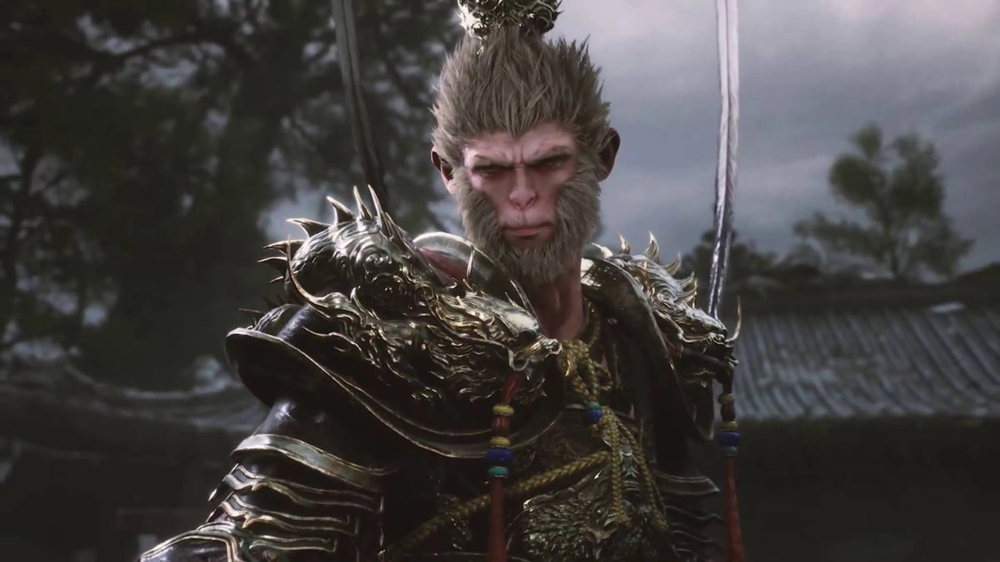
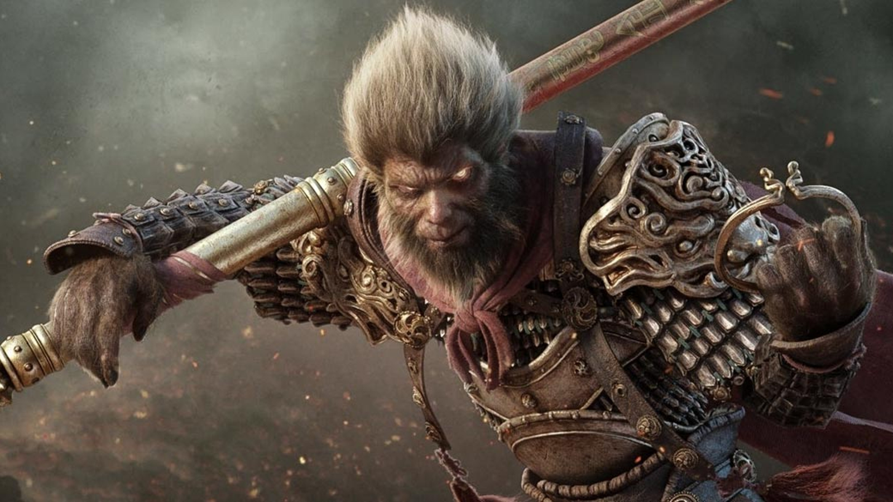

BLACK MYTH: WUKONG
Explora el mundo de Wukong
Aqui una galeria del juego de Wukong.

Armadura dorada

Preparandose para pelear

Peleando con gigante

Olimpo de agua

Mono alterado
Black Myth: Wukong es un videojuego de acción y aventura inspirado en la clásica novela china "Viaje al Oeste." Desarrollado por Game Science, el juego sigue la historia del Rey Mono, Sun Wukong, mientras lucha contra diversas criaturas míticas en un mundo lleno de magia y peligros. Con gráficos impresionantes y un combate dinámico, el juego permite a los jugadores transformarse en diferentes criaturas y usar una variedad de habilidades mágicas. Black Myth: Wukong promete una experiencia inmersiva con una narrativa profunda, combinando elementos tradicionales de la mitología china con la acción moderna.
Black Myth: Wukong también destaca por su enfoque en el realismo y la fidelidad visual, utilizando tecnología avanzada para crear un mundo impresionante y lleno de detalles. Los enemigos presentan un desafío significativo, requiriendo que los jugadores dominen las mecánicas de combate y adapten sus estrategias a medida que enfrentan diferentes tipos de adversarios. Además, el juego incluye una rica narrativa que explora los orígenes y las motivaciones de Sun Wukong, ofreciendo una nueva interpretación de este icónico personaje en la mitología china. Con su combinación de acción, mitología y gráficos de última generación, Black Myth: Wukong se perfila como un título imprescindible para los aficionados a los juegos de acción y aventura.
Black Myth: Wukong también destaca por su enfoque en el realismo y la fidelidad visual, utilizando tecnología avanzada para crear un mundo impresionante y lleno de detalles. Los enemigos presentan un desafío significativo, requiriendo que los jugadores dominen las mecánicas de combate y adapten sus estrategias a medida que enfrentan diferentes tipos de adversarios. Además, el juego incluye una rica narrativa que explora los orígenes y las motivaciones de Sun Wukong, ofreciendo una nueva interpretación de este icónico personaje en la mitología china. Con su combinación de acción, mitología y gráficos de última generación, Black Myth: Wukong se perfila como un título imprescindible para los aficionados a los juegos de acción y aventura.